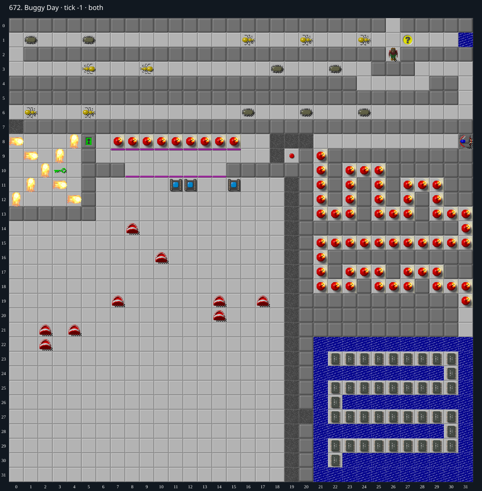

Jacques · Original Tile World MS
672. Buggy Day
Impossibility argumentEvery required chip is separated from Chip by an unbridgeable water moat.
40 chips required · 445 second time limit
Why completion is impossible
- The 40 required chips are the only 40 chips in the file. They form a snake at x 22..30, y 23..30. Every chip additionally has Water beneath it.
- The chip snake is entirely surrounded by top-layer Water. The mainland opening is gravel (20, 27), but its eastern neighbor (21, 27) is Water; it is not a direct entrance onto chip (22, 27). The entire x 21 boundary of the lake, y 22..31, is Water.
- There are no flippers or blocks in either layer. The only cloner is a glider cloner, so it cannot create blocks or boots. No teleports exist.
- Entering the separating top-layer Water without flippers kills Chip. Only blocks could fill it, and none exist or can be created. Monsters cannot bridge water. Thus no required chip can be collected.
- All three exits are under Sockets at (11, 11),(12, 11),(15, 11), so none can be entered with 40 chips outstanding.
Inspect both layers
The main map shows the initial runtime state. Switch to the buried layer to inspect hidden terrain and items. Hover coordinates are also available in the downloadable SVG.


Recorded checks and attempts
- DAT two-layer inventory: Exact DAT metadata/layers decoded; initial production runtime loaded and rendered with repository sprites.
Scope and limitations
- Proof concerns ordinary legal play; cheats/editor changes excluded.
Evidence
- Structured report
- web/src/ruleset-ms/impl/builtinLevelRegistration.ts
- legacy_c/mslogic.c:1002-1011 (bounded cardinal movement)
- legacy_c/mslogic.c:1034-1042 (socket/key requirements)
- legacy_c/mslogic.c:1616-1736 (arrival/terrain effects)
- legacy_c/mslogic.c:1825-1832 (exit completion)
- web/src/ruleset-ms/impl/chipMovement.ts:104-108 (TypeScript completion)